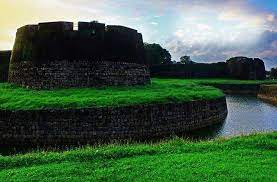
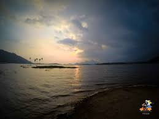

| Palakkad Fort  This is the place for the people who want to connect with the history of Palakkad. Commonly known as Tipu’s Fort, the gigantic Palakkad Fort is located in the heart of the city. The glorious attraction of Kerala, Palakkad Fort woos tourists with its mesmerizing architecture. Built by Haider Ali in 1766 AD, the fort campus houses Hanuman (Anjaneya) Temple, which will surely leave you spellbound with its unique interiors. |
| Kava Viewpoint  Mangalavanam is an ecologically sensitive area situated at the centre of the Indian city of Kochi, covering about 2.74 hectares.[1] It also houses a shallow tidal lake connected with Kochi backwaters by a canal. It is situated behind the Kerala High Court building. It is a nesting ground for a large variety of migratory birds and supports many types of mangroves. The Managalavanam is often regarded as the "green lung of Kochi",[2] considering its role in keeping the city's air pollution under check. The area is a roosting place for many kinds of resident and migratory birds. |